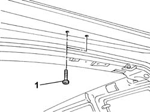
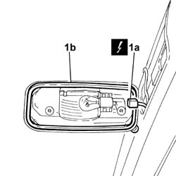

5550D16 third stop light - r+r
- Path
- Procedures > 55 ELECTRICAL EQUIPMENT > 5550 MANOEUVRING AND WARNING SIGNALS > 5550D brake and reversing lights > 5550D16 third stop light - r+r
- Kind
- repair procedure (removal / refitting; the operation number is the code)
- Applies to
- all engines; all production periods
- Interactive page
- https://sloeber94.github.io/elrnDB-fDbl/en/#/2584957
Applies to: all engines; all production periods
 Removing
Removing
 Refitting
RefittingDisconnect the battery negative terminal.
1. Undo the light's fixing screws.

Applies to: all engines; all production periods
1. Disconnect the electrical connector (1a) and remove the third stop light (1b).
 | Name | Connector |
|---|---|---|
1a | Additional (third brake light) |

Applies to: all engines; all production periods
Refitting
RemovingConnect the electrical connector and fit the light in its seating.
| Name | Connector |
|---|---|---|
- | Additional (third brake light) |
Tighten the screws securing the third stop light.
Connect the battery negative terminal.